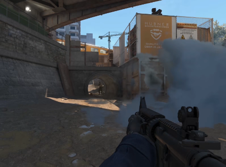
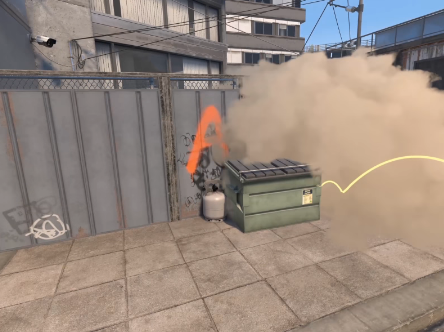
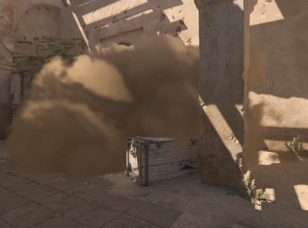

Smoke Grenades are now dynamic volumetric objects that interact with the environment, and react to lighting, gunfire, and explosions. Smoke now has the ability to interact with other gameplay events, creating new opportunities. Bullets and HE grenades can push smoke to briefly clear sightlines or expand occlusion.
Now the smoke will seep out of opened doorways and broken windows, go down and up stairs, as well as expand in long corridors and combine with other smokes.
In Counter-Strike 2 smoke particles work with the unified lighting system allowing for more realistic light and color.
